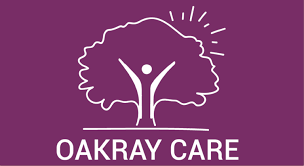

.png)
About
Healthcare IT specialists since 2002
Who we are
Compitel is a UK-based healthcare IT consultancy, with over 20 years of experience delivering innovative digital solutions for health and social care providers. We specialise in systems design, implementation, reporting, and ongoing support — helping organisations, across the UK, improve care delivery through technology.
Our mission is to empower care providers and their clients by leveraging cutting-edge tools - including Artificial Intelligence (AI), Automation, and system interoperability - to streamline operations and enhance patient outcomes.
Richard Eason
Founder
44 years of experience in Information Technology and Systems, across both public and private sectors.
Charlie
AI Specialist
Holds a Masters in Mathematics from the University of St Andrews. Expert in AI, Automation, and interoperability.
Jo
Communications
An MA (Hons) in English Literature, her background is in public relations and press, including work at The Royal Collection.
Sophie
Systems Developer
Currently studying Astrophysics at the University of Bristol, Sophie assists with system development, bringing analytical precision and a fresh perspective to our technical projects.
What we do
We provide expert healthcare IT consulting services, specialising in SystmOne implementations and digital transformation for care providers. Our goal is to optimise resource allocation, improve patient care, and foster collaborative user communities.
SystmOne Implementation
Professional implementation and customisation of SystmOne clinical systems for hospices, care homes, and healthcare organisations across the UK. We ensure seamless design, configuration, and deployment.
Healthcare Systems Design
Tailored healthcare IT system design and integration to meet the operational needs of care providers. Our solutions enhance team collaboration, data accuracy, and workflow efficiency.
Training & Support
Tailored training programs and responsive support designed to empower teams with the confidence and skills to fully leverage their healthcare IT systems. We offer remote and in-person training, onboarding for new staff, and ongoing technical assistance to ensure long-term success.
User Groups & Community
We establish and support regional SystmOne user groups, including the Sussex-wide and Isle of Wight communities. These groups promote shared learning, peer support, and best practice exchange among healthcare professionals.
Who we've helped
Over our 20+ year history, we’ve partnered with a wide range of healthcare organisations — from care homes, hospitals to hospices — helping them modernise their IT infrastructure, improve compliance, and deliver better patient outcomes.



What Our Clients Say
"Thank you so much for all the help and support you provided during our SystmOne implementation"
- Jo, Clinical Nurse Specialist"Richard has the ability to explain complex things in a simple manner"
- Liz, Physiotherapist"Compitel delivered our clinical system on time and on budget"
- Claire, Care Home Manager